闻乐 发自 凹非寺
量子位 | 公众号 QbitAI
原来字节也有龙虾——
Deer-Flow2超级智能体管理框架。
开源发布后迅速登上了GitHub Trending榜首，已经收获了35.3k Star。
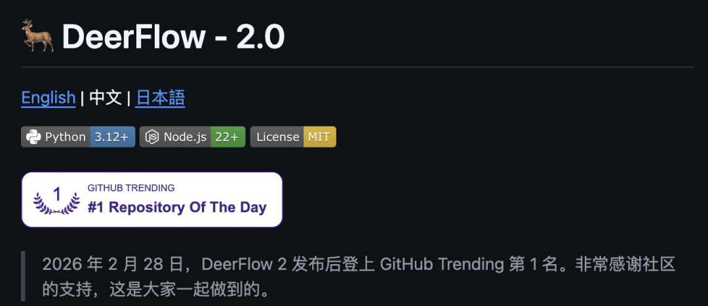
Deer-Flow2采用模块化多智能体架构，这些智能体通过LangGraph实现协同合作。
主打开箱即用，内置了Tavily、Brave Search、DuckDuckGo等多种搜索引擎，还集成了Jina等爬虫工具，基本把信息收集的十八般兵器都给配齐了。
当然，扩展性也没落下，自定义API或模型随意接。
核心能力上，多智能体协同、沙箱安全执行、一键部署全都有，Docker快速部署和本地开发任你挑，主流大模型统统兼容。
不过最贴心的还得是IM渠道支持——
原生适配飞书、Telegram、Slack，没有公网IP也能跑。

核心能力与技术亮点
DeerFlow在迭代过程中完成了一次彻底的架构升级。
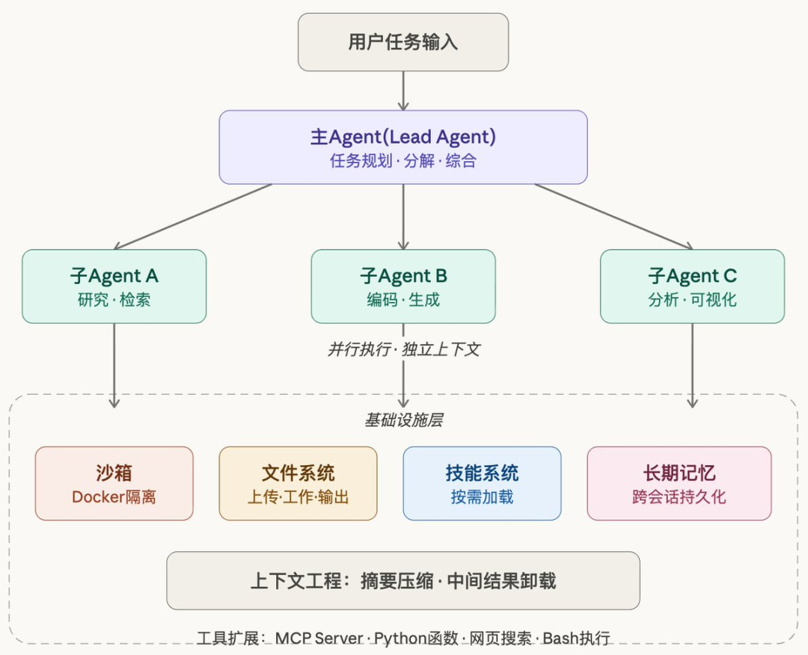
1.0版本采用固定5节点多智能体架构，能力边界相对明确，主要聚焦在深度研究场景。
而2.0版本则对整体结构进行了全面重构，从底层骨架到上层能力都实现了飞跃。
新版本采用单一主智能体+11 层中间件链+动态子智能体的全新架构，将核心能力收敛到工具集与中间件链中，让整个系统更轻量、更灵活、更易扩展。
相比1.0需要调整整体结构才能新增能力，2.0只需添加新技能就能完成拓展，无需改动底层框架。
原本作为核心的深度研究，也从唯一主打能力转变为框架内置的一项基础能力。
在框架层面，DeerFlow 2.0已经整合子智能体调度、长期记忆、隔离沙箱执行环境、可扩展技能与工具等关键模块，形成了一套完整、成熟的智能体运行能力体系。
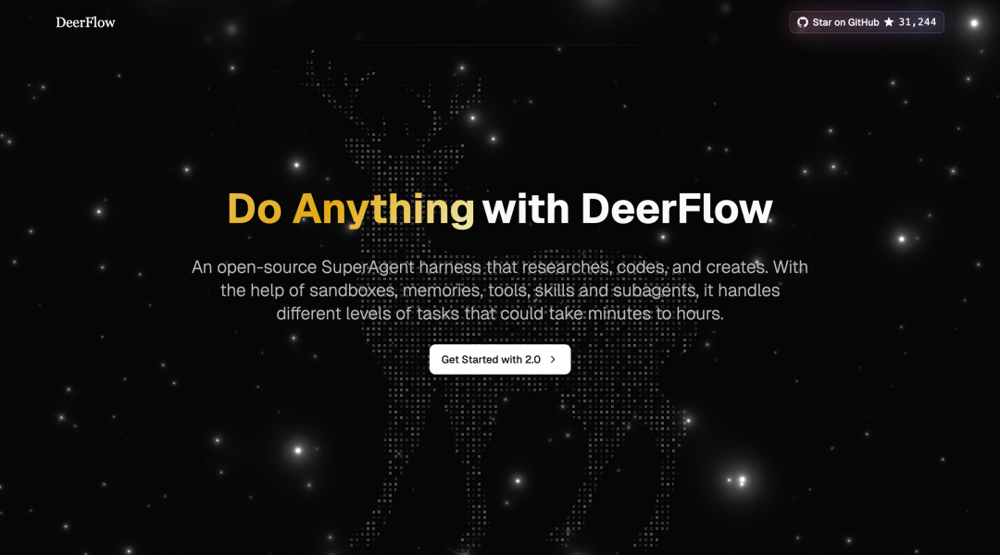
可插拔Skill体系
为了让智能体快速适配不同场景，DeerFlow 2.0搭建了一套可插拔的技能体系。
出厂自带深度研究、数据分析、图表生成、音视频创作等十余种常用技能，系统会根据任务需求渐进式加载控制token消耗，这样就避免了上下文被过度占用而导致的效率下降。
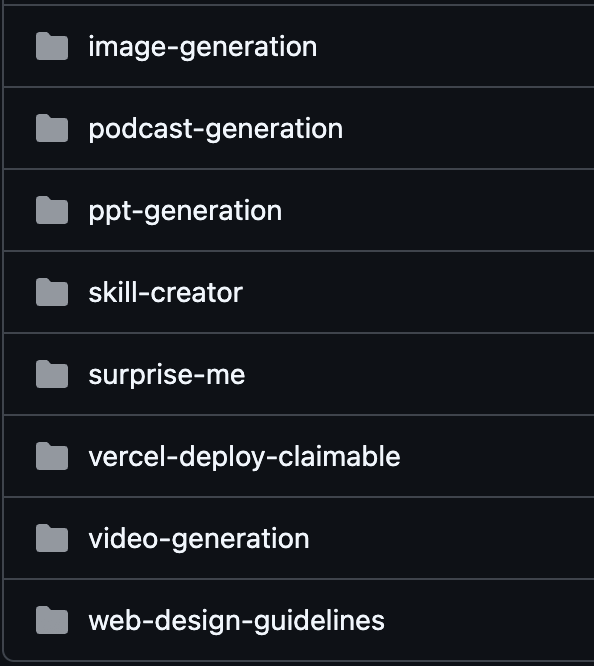
如果内置能力无法满足需求，用户还可以自行封装专属技能。
配合官方提供的skill-creator工具，几分钟就能为智能体扩展新能力。
同时系统提供MCP与Python接口，支持自定义工具的深度集成，甚至可接入Claude Code，让用户在终端就能完成工具的下发、查看与管理操作
隔离沙箱执行环境
DeerFlow 2.0还配备了独立隔离沙箱。每个任务都在专属沙箱中运行，拥有完整文件系统与Bash执行权限，支持文件读写、脚本运行、命令操作等。
系统提供本地、Docker、Kubernetes三种运行模式。
其中Docker模式采用字节开源的AIO Sandbox，隔离级别更高、运行更稳定。
同时自动完成虚拟路径与物理路径的映射，确保开发环境与部署环境保持一致。
子智能体调度+上下文工程
面对复杂长时任务，DeerFlow 2.0通过调度机制与上下文工程双管齐下。
主智能体会先对任务进行结构化拆解，再按需调度最多3个子智能体并行执行子智能体可选用通用能力或命令行专家型。
每个子智能体都拥有独立上下文，互不干扰、互不污染
在此基础上，框架还通过多层中间件链、上下文自动摘要压缩、外部文件存储、子任务限流等设计，系统性解决长时任务中上下文窗口不足的问题。
说了这么多，接下来检验一下DeerFlow 2.0的能力如何。
一键产出完整、可交付的足球联赛官网页面，从设计到代码全流程自动化。

一句指令就能把复杂概念变成孩子也能看懂的哆啦A梦漫画！
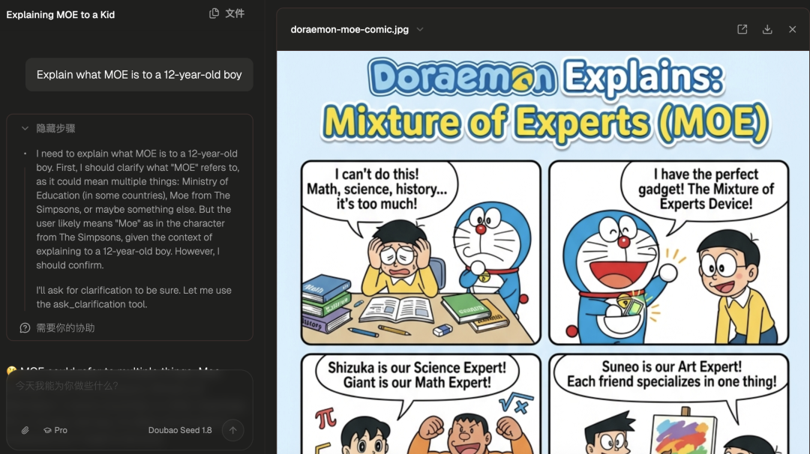
一句话生成液态玻璃天气界面，鼠标悬停还能3D形变。

如何部署
DeerFlow提供了Docker和本地这两种主要的部署方式。
Docker部署是最简单快捷的方式，只需几个命令，就能在本地启动完整的DeerFlow服务。
首先克隆仓库：
git clone https://github.com/bytedance/deer-flow.git
等待仓库下载完成后，进入项目根目录：
cd deer-flow
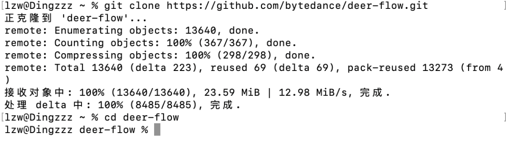
生成本地配置，输入：
make config
系统会自动生成config.yaml配置文件和.env文件（如果没有make命令，Windows可安装MinGW）。
然后找到项目目录下的Config.yaml文件，填入模型相关配置。
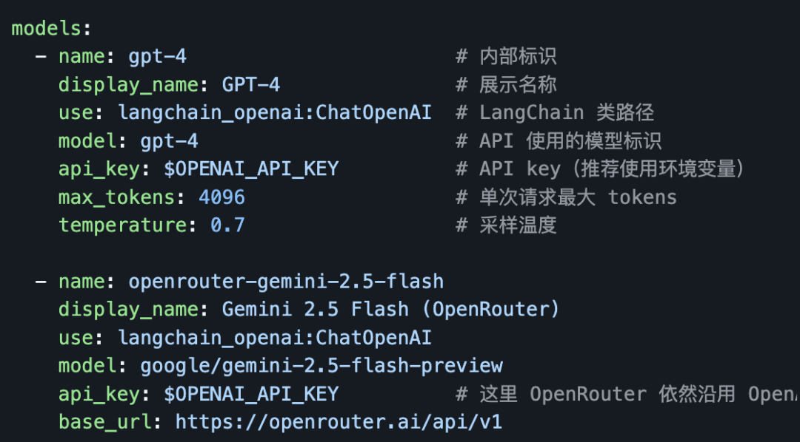
设置完成后，输入：
make docker-init
自动拉取字节开源的AIO Sandbox沙箱镜像，首次拉取可能需要几分钟。
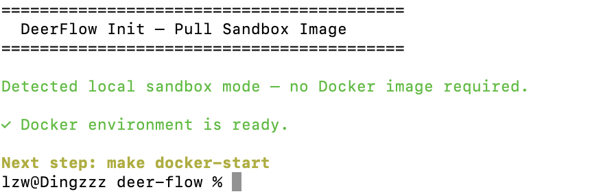
镜像拉取完成后，启动服务，输入：
docker-start
服务启动后，访问 http://localhost:2026即可进入Web界面。
如果需要进行深度定制或二次开发，可以选择本地部署方式。
本地部署需要满足一定的前置条件，包括Python 3.12+、Node.js 22+、pnpm、uv包管理器以及nginx。
满足前置环境后检查依赖，打开终端进入deer-flow根目录，输入：
make check
系统会自动校验上述依赖是否齐全、缺少的会提示补充。
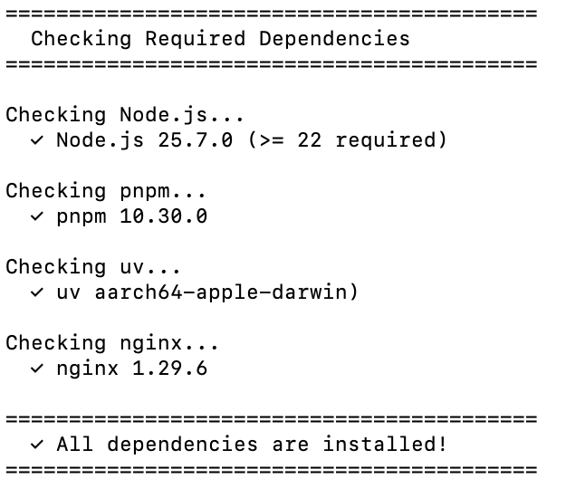
这时候你可以输入：
make install
系统会自动安装python和node相关依赖包。
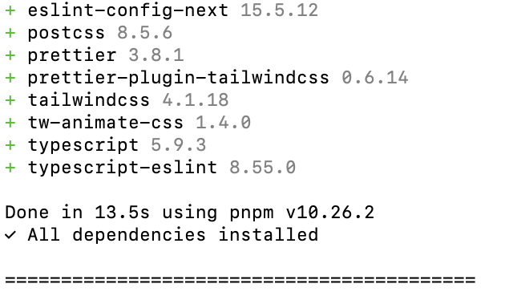
接下来可以输入make setup-sandbox（按需）预拉取沙箱镜像，避免后续首次使用时等待。
然后启动服务：
make dev
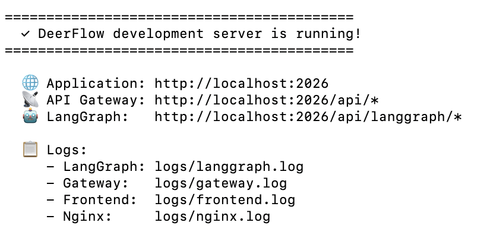
这种方式适合需要修改源码、调试功能或贡献代码的开发者。
DeerFlow原生支持从即时通讯应用接收任务，目前支持Telegram、Slack和飞书/Lark三个渠道，且都不需要公网IP。
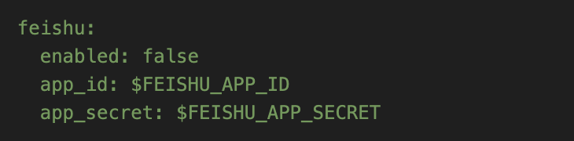
△config.yaml文件channels相关配置
配置完成后，就可以直接在聊天窗口中与DeerFlow交互。
DeerFlow的两位核心开发者是来自北京大学的Tao He和来自南京大学的Henry Li。
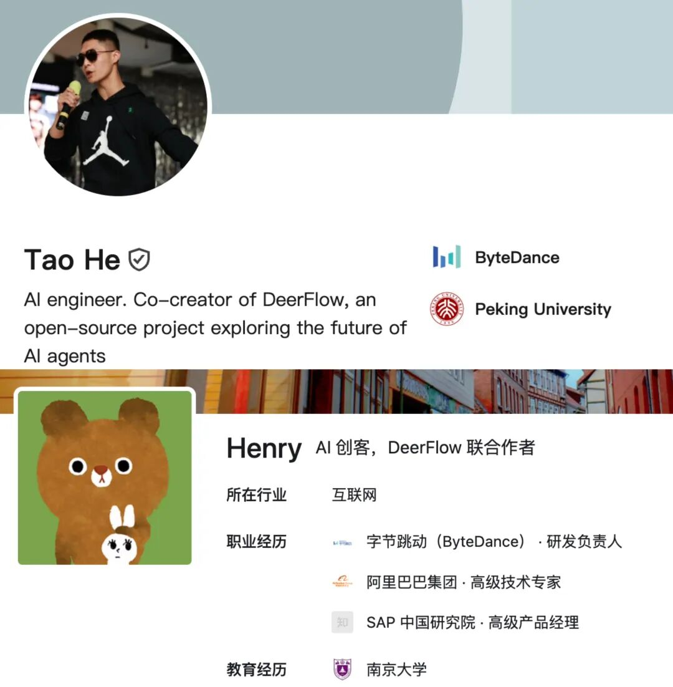
项目地址：https://github.com/bytedance/deer-flow
官方网站：https://deerflow.tech
参考链接：https://x.com/Gorden_Sun/status/2035698488034628003
一键三连「点赞」「转发」「小心心」
欢迎在评论区留下你的想法！
— 完 —
🦞 今天，你养虾了吗？
欢迎加入【龙虾养成讨论组】，一起交流养虾经验！扫码添加小助手加入社群，记得备注【OPENCLAW】哦～